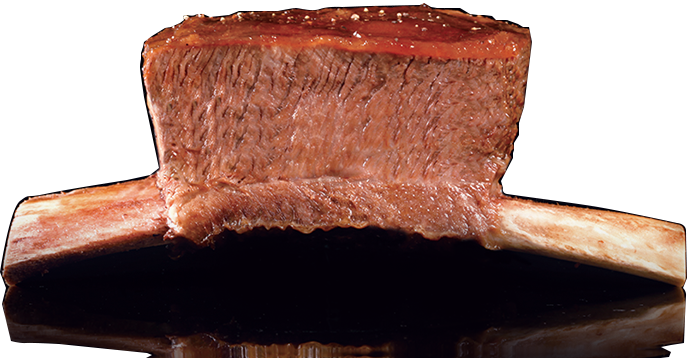
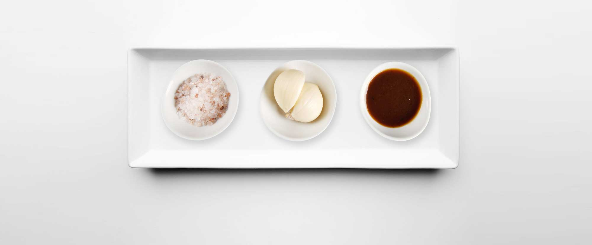

コンセプト
王品は1993年に設立されて以来、台湾における高級ステーキレストランの代表的存在となっています。王品の逸品は、1頭の牛からわずか6人分しかとれない「ワン・ステーキ」です。これは台湾で経営の神様と呼ばれた王永慶氏が、大切なお客様をもてなす時の料理に由来しています。厳しく味にこだわり、1頭の牛から最も上等な部分、第6から第8の肋骨だけを取り、250℃の高温で1時間半、ウェルダンまで焼き上げており、香ばしく柔らかいステーキの風味を心行くまでお楽しみいただけます。
王品は味へのこだわりはもとより、お客様がお感じになる全てを重視しています。都会的でファッショナブル、かつ文化的なデザインによるエレガントで温かみのある心地よい雰囲気で、お食事のひと時をお楽しみいただけるよう、5年ごとにインテリアの改装を行っております。イタリアの有名デザイナーズブランド―RAKのミニマルで落ち着いた、質感の高いデザインのテーブルウエアで、料理の素晴らしい味と品格を演出します。
私どもがお伝えするのは、「一番大事な方だけへのおもてなし」という王品の心です。お客様一人一人を大切にする心遣いのサービスで、台湾各界及び有名雑誌による評価で第1位の栄誉に輝いています。
- 2004年『遠見雑誌』サービス業におけるトップブランド調査にて、レストランチェーン第1位獲得。
- 2005年『天下雑誌』第4回卓越サービス賞（高付加価値サービスを提供している業者に贈られる）を獲得。
- 2008年『遠見雑誌』傑出サービス賞10大サービス業調査にて、王品はレストランチェーン第1位と、サービス評価総合チャンピオンを獲得。
- 2008年経済部（経済産業省に相当）の「台湾の美味しい名店優秀レストラン」特別優秀賞を獲得。

「王品台塑ステーキ」を美味しく召し上がるために

- まず、オリジナルの風味で
- タレに漬け込んだ新鮮な肉質を味わう。
- 次、ニンニクスライスとご一緒に
- ニンニクの辛味と香りが新鮮な牛肉と口の中で最高なハーモニーを作ってくれます。ニンニクの風味が、牛肉のすばらしさを更に引き立ててくれます。
- 特製ソースとご一緒に
- 新鮮な野菜と牛肉を三日三晩で煮込んで出来たソースとご一緒に召し上がると、牛肉の歯ごたえがさらに滑らかになり、満足感を与えてくれます。